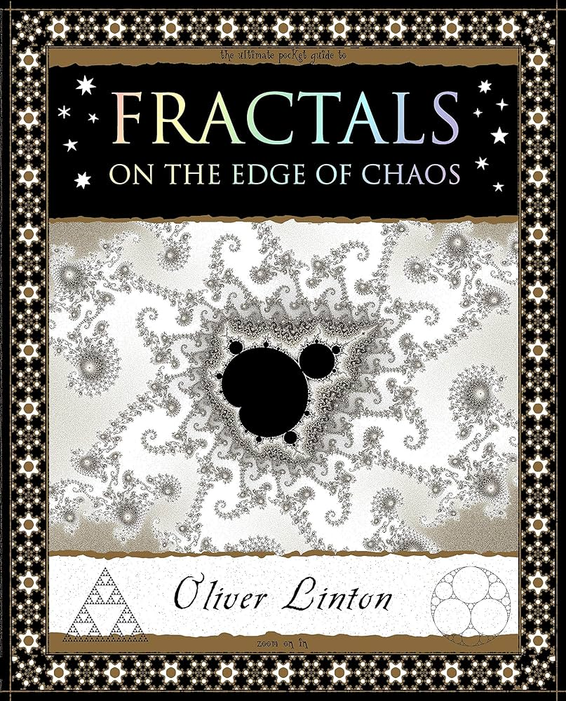

Deep Learning: Foundations and Concepts
Christopher M. Bishop and Hugh Bishop
üê¢
An in-depth introduction to the various pivotal concepts, algorithms, and architectures behind the modern deep learning revolution. Quite mathematically notation dense which admittedly made some sections difficult to read, but I generally found myself leaving each chapter satisfied. Likely due to the large scope of the book, some areas are rigorously reviewed while others I felt could be expanded upon more. In particular, some topics I would have liked to have seen included more were universal approximation theorems, state space models, and deep reinforcement learning. Overall an educational textbook that I would highly recommend for learning the fundamental technical aspects behind deep learning.
Rating: 8/10
 How to Solve It
How to Solve It
George Pólya
üéØ
Can you see it at a glance? A mathematically-inclined study into the practice of heuristic (or as the book terms it, “plausible”) reasoning for general problem solving. Well-written with clear example figures, the book adopts a sort of nonlinear structure with references to succeeding sections and material – although it is still best read front to back. The majority of content revolves around the Dictionary, which contains short musings on various skills, stories, and topics related to solving problems. Some personal favorites of mine were: Determination, hope, success; Generalization; Heuristic/Heuristic reasoning; Modern heuristic; Pappus; The future mathematician; and Working backwards.
Rating: 9/10

Fractals: On the Edge of Chaos
Oliver Linton
ü´ß
An informative and well-diagrammed overview of fractal systems and some of the math behind them. The author’s passion for the subject is clear throughout the book, and I spent a lot of time admiring the book’s many illustrations of fractal geometry.
Rating: 7/10